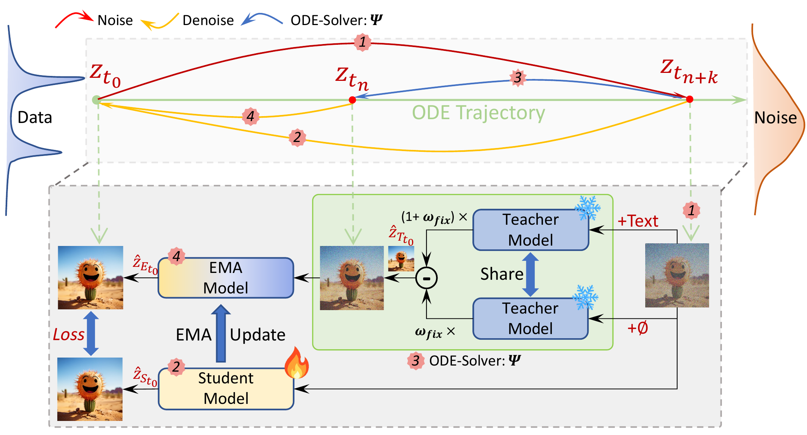
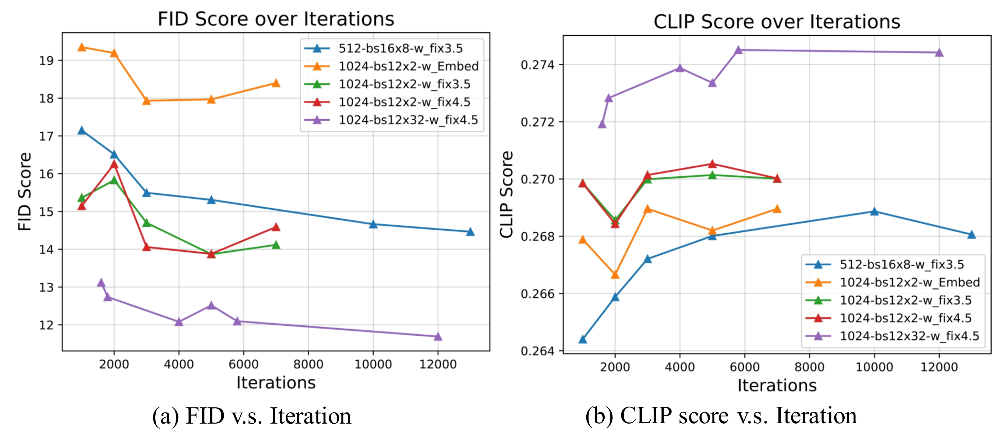
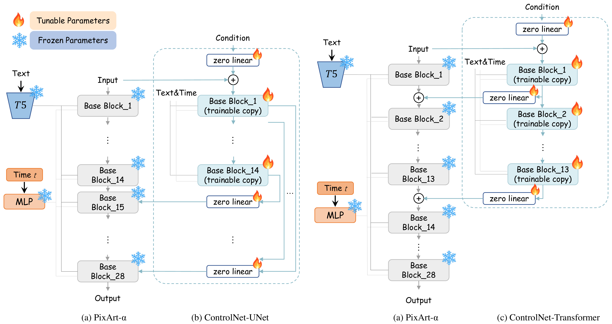
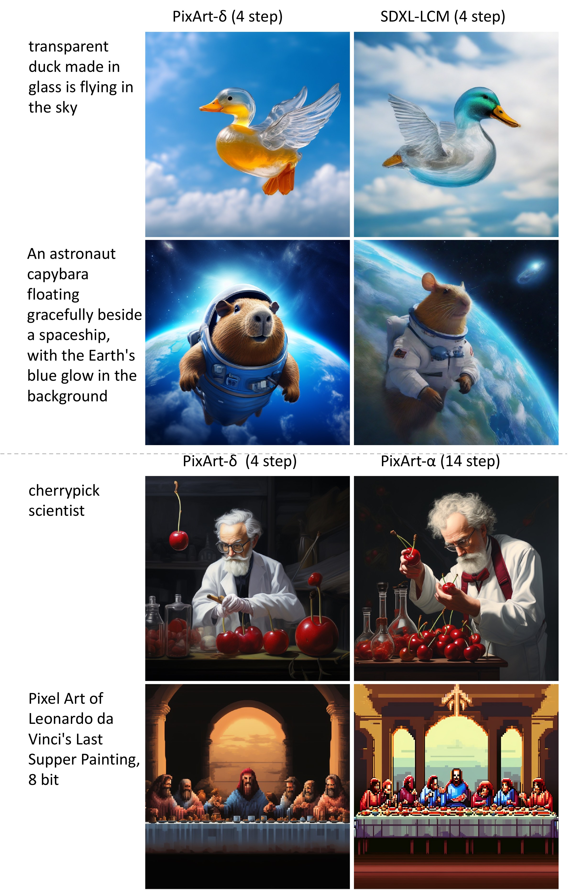
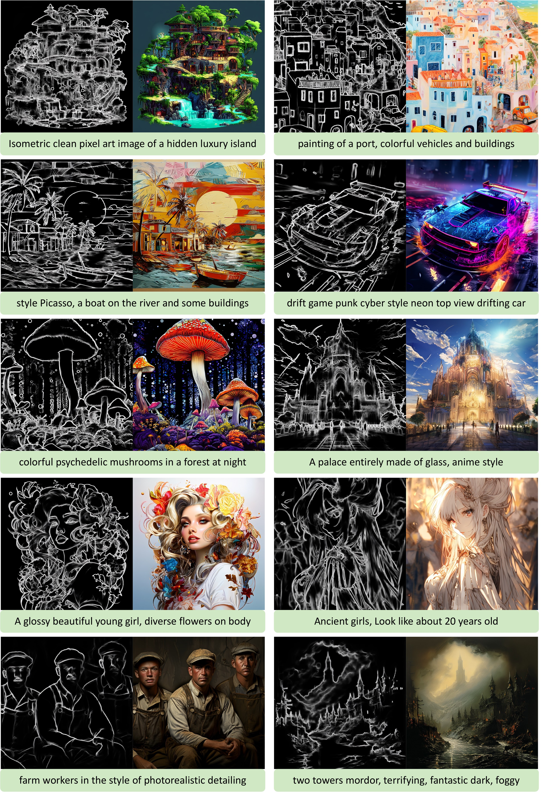

🎮 费曼一分钟（通俗速读）
PixArt-α 已是高效 DiT 文生图基座；PixArt-δ 在其上叠两层能力：LCM 蒸馏把采样从 14 步压到 2–4 步，A100 上 0.5s/1024px（相对 α 约 7× 加速）；ControlNet-Transformer 把边缘/深度等条件注入 DiT，实现细粒度可控生成。
LCM 侧：用 Latent Consistency Distillation (LCD) 在 120K 图文对上蒸馏 Teacher（PixArt-α），固定 CFG scale ω_fix=4.5（比 LCM 原版随机 ω embedding 更简单且效果更好），约 5K iter 收敛；32GB V100 一天可训完，8-bit 推理 <8GB VRAM。
控制侧：UNet 式 ControlNet 强行把 DiT 28 block 拆成「encoder/decoder」效果差；改为复制前 N=13 个 block，zero linear 注入主支，与 Transformer 数据流一致。简单边缘 N=1 够用，人脸轮廓等难例需更大 N；训练有 sudden converge 现象（300–1000 steps 内突然对齐条件）。
Abstract
This technical report introduces PixArt-δ, integrating Latent Consistency Model (LCM) and ControlNet into PixArt-α. LCM significantly accelerates inference, enabling high-quality images in just 2–4 steps. PixArt-δ achieves 0.5 seconds for 1024×1024 images — a 7× improvement over PixArt-α.
PixArt-δ is efficiently trainable on 32GB V100 GPUs within a single day. With 8-bit inference, it synthesizes 1024px images within 8GB GPU memory. We introduce ControlNet-Transformer, tailored for Transformers, achieving explicit controllability alongside high-quality generation — a promising open-source alternative to Stable Diffusion.
本技术报告提出 PixArt-δ，将 LCM 与 ControlNet 集成到 PixArt-α。LCM 大幅加速推理，仅需 2–4 步即可生成高质量图像；1024×1024 图像生成仅需 0.5 秒，相对 PixArt-α 提速约 7 倍。
PixArt-δ 可在 32GB V100 上一天内完成训练；配合 8-bit 推理，8GB 显存即可合成 1024px 图像。我们提出面向 Transformer 的 ControlNet-Transformer，在保持生成质量的同时实现显式可控，是 Stable Diffusion 系列的有力开源替代。
段落功能
双贡献宣告：① LCM 蒸馏加速（步数/延迟/显存）；② DiT 专用 ControlNet 架构。数字 hook：0.5s、7×、8GB。
逻辑角色
论证链起点：在已有高效基座 PixArt-α 上，同时解决「推理慢」与「不可控」两个部署痛点。
潜在漏洞
技术报告非 peer-review 论文；LCM 蒸馏数据仅 120K 内部集；ControlNet 实验以 HED 为主，其他条件标为 future work。
1. Introduction
We propose PixArt-δ by incorporating LCM and ControlNet into PixArt-α — an advanced 1024px DiT T2I model known for superior quality and efficient training.
LCM views reverse diffusion as solving an augmented PF-ODE, enabling ~4-step sampling while preserving quality. PixArt-δ takes 0.5s per 1024×1024 image on A100 (7× faster than α). We also support LCM-LoRA for convenience.
我们在 PixArt-α（高效 1024px DiT 文生图基座）上集成 LCM 与 ControlNet，提出 PixArt-δ。
LCM 将反向扩散视为增广 PF-ODE 求解，约 4 步采样仍保质量；A100 上 0.5s/张 1024px，相对 α 提速 7×。同时支持 LCM-LoRA 模块。
段落功能
锚定 PixArt-α 作为 Teacher/基座；LCM 解决推理瓶颈，ControlNet 解决条件控制——两条正交能力线。
ControlNet excels at conditioning UNet diffusion models, but direct replication into Transformer proves less effective. We propose ControlNet-Transformer customized for DiT, achieving explicit controllability with high-quality generation.
ControlNet 在 UNet 扩散模型上表现优异，但直接套用到 Transformer 效果不佳。我们提出面向 DiT 定制的 ControlNet-Transformer，实现显式可控与高质量生成。
段落功能
Intro 第二 pivot：UNet 架构假设（encoder-decoder + skip）不适用于同质 DiT block 堆叠——预告 §4 架构对比。
3. LCM in PixArt-δ — LCD · Noise Schedule
We employ Latent Consistency Distillation (LCD) on 120K internal image-text pairs. Three models function as denoisers: Teacher (PixArt-α), Student $f_\theta$, and EMA $f_{\theta^-}$ for the ODE solver $\Psi$.
Training: sample noise at $t_{n+k}$ → Teacher denoises to $\hat{z}_{T_{t_0}}$ → ODE solver computes $\hat{z}^{\Psi,\omega}_{t_n}$ → EMA denoises to $\hat{z}_{E_{t_0}}$; Student denoises $z_{t_{n+k}}$ to $\hat{z}_{S_{t_0}}$ → minimize $d(\hat{z}_{S_{t_0}}, \hat{z}_{E_{t_0}})$.
Unlike original LCM's variable $\omega \in [\omega_{min}, \omega_{max}]$, we use constant $\omega_{fix}$, removing guidance scale embedding for simplicity.
在 120K 内部图文对上执行 LCD。三模型协同：Teacher（PixArt-α）、Student $f_\theta$、EMA $f_{\theta^-}$ 配合 ODE 求解器 $\Psi$。
训练流程：在 $t_{n+k}$ 采样噪声 → Teacher 去噪得 $\hat{z}_{T_{t_0}}$ → ODE 求解器从 $z_{t_{n+k}}$ 与 $\hat{z}_{T_{t_0}}$ 算 $\hat{z}^{\Psi,\omega}_{t_n}$ → EMA 进一步去噪得 $\hat{z}_{E_{t_0}}$；Student 对 $z_{t_{n+k}}$ 去噪得 $\hat{z}_{S_{t_0}}$ → 最小化两者距离（一致性蒸馏目标）。
与原版 LCM 从 $[\omega_{min}, \omega_{max}]$ 随机采样 $\omega$ 不同，我们固定 $\omega_{fix}$，去掉 guidance scale embedding，实现更简单。
蒸馏数据流（自绘）
flowchart TB
Z["z ~ D_z, sample t_{n+k}"] --> T["Teacher: denoise → ẑ_T"]
Z --> S["Student f_θ: denoise → ẑ_S"]
Z --> PSI["ODE Solver Ψ → ẑ^Ψ,ω_tn"]
PSI --> EMA["EMA f_θ⁻: denoise → ẑ_E"]
S --> LOSS["L = d(ẑ_S, ẑ_E)"]
EMA --> LOSS
LOSS --> UPD["θ ← θ - η∇L; EMA update"]
CFG 蒸馏项
$\hat{z}^{\Psi,\omega_{fix}}_{t_n} = z_{t_{n+k}} + (1+\omega_{fix})\Psi(z_{t_{n+k}}, t_{n+k}, t_n, c) - \omega_{fix}\Psi(z_{t_{n+k}}, t_{n+k}, t_n, \varnothing)$ — 在 latent 空间直接预测 PF-ODE 解。
📄 原文 Figure 1：LCM 蒸馏训练管线

Hyper-parameters: We ablate CFG scale and batch size via FID and CLIP scores.
• CFG Scale: Compare $\omega_{fix}$=3.5, 4.5 (optimal for PixArt-α), and $\omega_{Embed}$ (standard LCM). Constant guidance scale improves performance and simplifies implementation.
• Batch Size: 2×V100 (bs=24) vs 32×V100 (bs=384). Larger batch improves FID/CLIP, but smaller batch also converges fast with comparable quality (Fig. 8).
• Convergence: Training reaches convergence after ~5,000 iterations; further gains minimal.
超参消融：以 FID 与 CLIP 评估 CFG scale 与 batch size。
• CFG：对比 3.5、4.5（PixArt-α 最优）、以及 LCM 标准 ω embedding。固定 scale 效果更好且实现更简单。
• Batch：2×V100（总 bs=24）vs 32×V100（总 bs=384）。大 batch 提升指标，但小 batch 也能快速收敛（Fig.8）。
• 收敛：约 5000 iter 后增益甚微。
- ω_fix = 4.5 — 与 PixArt-α 推理最优 CFG 一致，蒸馏时固定而非随机 embedding
- ~5K iter — LCD 主收敛点；2×V100、lr=2e-5、EMA μ=0.95
- k=20 skipping step；DDIM-Solver
📄 原文 Figure 3：FID / CLIP vs CFG scale & batch size

Noise Schedule Adjustment: We adapt LCM's noise schedule to align with PixArt-α's higher logSNR during distillation. Change $\beta_t$ from scaled-linear to linear: $\beta_{t_0}$: 0.00085→0.0001, $\beta_{t_T}$: 0.012→0.02. PixArt-δ parameterizes a broader noise distribution, enhancing generation (Hoogeboom et al., 2023; Chen, 2023).
Student initializes from Teacher (PixArt-α) with identical structure and trainable parameters — no performance compromise. LCM-LoRA integration supported for broader applications.
噪声日程调整：将 LCM 噪声日程对齐 PixArt-α 更高 logSNR；$\beta_t$ 从 scaled-linear 改为 linear（$\beta_{t_0}$、$\beta_{t_T}$ 相应调整），覆盖更广噪声分布。
Student 与 Teacher 结构完全一致，可直接用 PixArt-α 权重初始化；并支持 LCM-LoRA 扩展。
| 设置 | PixArt-δ | SDXL LCM | SD-V1.5 LCM |
|---|---|---|---|
| 数据量 | 120K | 650K | 650K |
| 分辨率 | 1024px | 1024px | 768px |
| Batch | 12×32 | 12×64 | 16×8 |
| 显存 | ~32G | ~80G | ~80G |
| 硬件 | PixArt-δ (4步) | SDXL LCM (4步) | PixArt-α (14步) | SDXL (25步) |
|---|---|---|---|---|
| A100 | 0.5s | 1.2s | 2.2s | 3.8s |
| V100 | 0.8s | 1.2s | 5.5s | 7.7s |
| T4 | 3.3s | 8.4s | 16.0s | 26.5s |
- 8-bit 推理：<8GB VRAM 可跑 1024px，甚至 CPU 可行
- 训练：2×V100、bs=24、<24GB 即可完成 LCD 微调
4. ControlNet in PixArt-δ — UNet vs Transformer
ControlNet for UNet uses skip-connections between encoder and decoder. Transformers lack explicit encoder/decoder blocks, making conventional ControlNet inappropriate.
PixArt-δ has 28 Transformer blocks. We replace zero-convolution with zero linear layer (weight & bias init to zero). Two designs explored:
• ControlNet-UNet: Treat first 14 blocks as "encoder", last 14 as "decoder"; copy 14 encoding blocks, add outputs via skip to decoder. Suboptimal — departs from Transformer data flow.
• ControlNet-Transformer: Apply ControlNet to first N base blocks. Copy first N blocks as trainable; output of $i$-th copy → zero linear → add to frozen $i$-th block output → feed $(i+1)$-th frozen block. Final N=13.
UNet ControlNet 靠 encoder-decoder skip 注入控制；Transformer 无显式 encoder/decoder，传统方案不适用。
PixArt-δ 共 28 个 Transformer block；zero conv 改为 zero linear（权重/偏置零初始化）。探索两种设计：
• ControlNet-UNet：前 14 block 当 encoder、后 14 当 decoder，复制 14 个编码 block 经 skip 连 decoder。效果差——违背 Transformer 同质数据流。
• ControlNet-Transformer：仅复制前 N 个 block；第 i 个可训练副本输出经 zero linear 加到第 i 个冻结 block 输出，再送入第 i+1 冻结 block。最终 N=13。
ControlNet-Transformer 数据流（自绘）
flowchart LR COND["HED / Canny condition"] --> CP["Copy block 1..N
(trainable)"] MAIN["Frozen DiT block 1..N"] --> ADD["+ zero linear(copy_out)"] CP --> ZL["Zero Linear"] ZL --> ADD ADD --> NEXT["→ frozen block i+1"] MAIN2["Frozen blocks N+1..28"] --> OUT["1024px output"] NEXT --> MAIN2
设计取舍
N=13 在算力与控制精度间平衡：简单场景 N=1 够用，人脸/身体轮廓等难边缘需更大 N；复制 27 层（全复制）收益递减。
📄 原文 Figure 2：ControlNet-UNet vs ControlNet-Transformer（MAIN）

Ablation (HED, 512px): ControlNet-Transformer outperforms ControlNet-UNet — faster convergence, better controllability. Copied blocks ablated: N ∈ {1, 4, 7, 13, 27}.
Most scenes/objects: N=1 suffices. Challenging edges (face/body outlines): performance improves as N increases. N=13 optimal balancing compute and quality.
Sudden Converge: Typically occurs at 300–1,000 steps depending on condition difficulty. After sudden converge, details progressively improve (especially face/body outlines).
消融（HED 条件，512px）：ControlNet-Transformer 全面优于 UNet 式方案——收敛更快、可控性更强。复制 block 数 N ∈ {1,4,7,13,27}。
多数场景/物体：N=1 即可。难边缘（人脸/身体轮廓）：N 越大越好；N=13 为算力与性能最优折中。
突然收敛：通常在 300–1000 steps 内突然对齐条件（与原版 ControlNet 类似）；之后细节逐步提升。
- 数据：3M HED-图文对；gradient accumulation=4
- 硬件：16×V100 32GB；N=27 时 bs/GPU=2，其余 bs=12
- ~1000 steps 多数边缘已满意；人脸轮廓需更多步
- Canny 等其他条件标为 future work
Experiments & Ablation
LCM Speed & Quality: Fig. 7 compares PixArt-δ (4 steps) vs SDXL-LCM and PixArt-α (14 steps, DPM-Solver). PixArt-δ maintains high quality at 4-step inference across hardware (Tab. 2).
Fast LCD Convergence: Fig. 8 shows 4-step samples during LCD on 2×V100 (bs=24, <24GB) — impressive results before 5K iterations.
ControlNet Quality: Fig. 9–10 demonstrate 1024px fine-grained control — precise geometric composition down to individual hair strands. Fig. 11 shows more PixArt-ControlNet samples.
LCM 速度/质量：Fig.7 对比 PixArt-δ（4 步）与 SDXL-LCM、PixArt-α（14 步）；4 步推理在各硬件上保持领先延迟且质量可比。
LCD 快速收敛：Fig.8 展示 2×V100 上 LCD 训练过程中的 4 步样例——5K iter 前已效果惊艳。
控制质量：Fig.9–10 展示 1024px 细粒度可控生成（几何构图精确到发丝）；Fig.11 为更多控制样例。
- 加速：4 步 vs α 14 步 / SDXL 25 步；A100 0.5s 闭环 Tab.2 + Fig.4 视觉对比
- 可控：ControlNet-Transformer N=13 + sudden converge 300–1000 steps → Fig.5 消融 + Fig.5 1024px 结果
- 可及性：32GB 训 LCM、8GB 推理、一天内完成——降低社区部署门槛
📄 原文 Figure 4 / 7：LCM 速度对比与生成样例

📄 原文 Figure 9–10：1024px 多样化控制结果

5. Conclusion
We present PixArt-δ, integrating LCM for 4-step sampling acceleration while maintaining high quality. We propose ControlNet-Transformer tailored for DiT, enabling precise control over generated images.
Extensive experiments demonstrate faster sampling and ControlNet-Transformer's effectiveness in high-resolution controlled generation. PixArt-δ generates high-quality 1024px controllable images in ~1 second, pushing SOTA in faster and more controlled image generation for real-time applications.
我们提出 PixArt-δ，集成 LCM 实现 4 步采样加速且保持高质量；并提出面向 DiT 的 ControlNet-Transformer，实现生成图像的精确控制。
实验验证更快采样与 ControlNet-Transformer 在高分辨率可控生成上的有效性；PixArt-δ 约 1 秒内生成 1024px 高质量可控图像，推动实时应用场景下的 SOTA。
段落功能
收束双贡献：LCM 蒸馏（步数/延迟/显存）+ ControlNet-Transformer（DiT 可控架构）。强调开源替代 SD 生态的定位。
潜在漏洞
ControlNet 仅系统验证 HED；定量指标（FID/HDD）不如后续 RelaCtrl 等工作完备；内部 120K/3M 数据集不可复现。
符号速查表
| 符号 | 含义 |
|---|---|
| $f_\theta$, $f_{\theta^-}$ | Student 与 EMA 一致性函数（去噪网络） |
| $\Psi(\cdot)$ | ODE 求解器（DDIM-Solver），在 LCD 中计算 $\hat{z}^{\Psi,\omega}_{t_n}$ |
| $\omega_{fix}$ | 固定 CFG scale，最优值 4.5（PixArt-α 一致） |
| $k$ | Skipping interval，取 20 |
| $t_n$, $t_{n+k}$ | 蒸馏时间步对；在 $t_{n+k}$ 采样噪声，Student/Teacher 在轨迹上对齐 |
| $\beta_t$, logSNR | 噪声日程系数；PixArt-δ 用 linear $\beta_t$ 对齐 α 更高 logSNR |
| $N$ | ControlNet-Transformer 复制的 DiT block 数，最优 13（共 28 block） |
| Zero Linear | 替代 zero conv 的线性层，权重/偏置零初始化，训练初期不扰动主支 |
| LCD / LCM | Latent Consistency Distillation / Model — latent 空间一致性蒸馏加速 |
| PF-ODE | Probability Flow ODE — 反向扩散的连续时间视角 |
论证结构总览
→ 观察（UNet ControlNet 直接套 DiT 效果差；LCM 在 SD 上成功但需适配 α 噪声日程）
→ 论点①（LCD 蒸馏 + 固定 ω_fix=4.5 + linear β_t → 2–4 步、0.5s/1024px、~5K iter 收敛）
→ 论点②（ControlNet-Transformer：复制前 N=13 block + zero linear 注入，摒弃 encoder-decoder 假象）
→ 证据（Tab.1/2 训练显存与推理延迟；Fig.1–3 LCM 管线与超参；Fig.2 架构；Fig.4/5 速度与 1024px 控制；sudden converge 300–1000 steps）
→ 结论（开源高速可控 T2I，ICLR 2024 technical report）
核心主张（一句话）
在 PixArt-α 上通过 LCD 蒸馏与 DiT 原生 ControlNet-Transformer 设计，同时实现 4 步近实时生成与 1024px 细粒度条件控制，且训练/推理门槛显著低于 SDXL-LCM。
来源：arXiv:2401.05252 · Technical Report · Huawei Noah's Ark Lab / Tsinghua / HKU / Hugging Face · Code
🧩 结构化十问（AI 解构）
让 AI 当助教，从十个角度提取论文骨架。
Q1 · 论文试图解决什么问题？
Q2 · 这是否是一个新问题？
Q3 · 要验证什么科学假设？
Q4 · 有哪些相关研究？如何归类？
- DiT T2I：PixArt-α, DiT (Peebles & Xie)
- 加速：LCM, LCM-LoRA, Consistency Models (Song et al.)
- 可控：ControlNet (UNet), Uni-Control, 后续 RelaCtrl/OminiControl
- 噪声日程：Hoogeboom simple diffusion, Chen noise scheduling
Q5 · 解决方案的关键是什么？
Q6 · 实验是如何设计的？
Q7 · 用什么数据集评估？代码开源吗？
Q8 · 实验结果是否很好支持了假设？
Q9 · 这篇论文到底有什么贡献？
Q10 · 下一步可以做什么？
🔬 深挖追问
第一性原理 · LCM 蒸馏本质
扩散采样本质是沿 PF-ODE 从噪声走向数据。LCM 强制 Student 在任意时间步 $t$ 上预测同一终点（自一致性映射），从而把多步积分压缩为 1–4 步跳跃。PixArt-δ 的关键适配是：噪声日程对齐 α（更高 logSNR）+ 固定 CFG（蒸馏时 ω 空间更简单），使 Teacher 轨迹与 Student 学习目标一致。
第一性原理 · 为何 UNet ControlNet 不适合 DiT
UNet ControlNet 假设：浅层 encoder 特征经 skip 注入 decoder，控制信号在多尺度层次结构中流动。DiT 是同质 self-attention block 堆叠，无天然 encoder/decoder 分界；强行 14+14 分割制造虚假信息流，破坏全局 attention 的均匀性。ControlNet-Transformer 尊重「block i 输出 → block i+1 输入」的链式结构，控制 residual 在同一语义深度注入。
第一性原理 · N=13 与 +50% 参数
复制前 13/28 block ≈ 46% 层数 → 控制分支参数与 FLOPs 各涨约 50%（后续 RelaCtrl 以此为 baseline）。N=1 对简单边缘足够说明控制信息可在浅层完成大部分对齐；难边缘需更多层是因为轮廓高频细节需更深 attention 融合。N=13 是经验 Pareto 点，非理论最优。
批判性思维 · 我们还没问的根本问题（盲区）
- 蒸馏数据 120K：相对 SDXL-LCM 650K 少 5×，泛化到开放域 prompt 是否受限？
- 固定 ω_fix：推理时改 CFG 是否需重新蒸馏？与 LCM-LoRA 动态 ω 的兼容性？
- ControlNet 仅 HED：Canny/Depth 标为 future work，开源权重是否覆盖多条件？
- Sudden converge：300–1000 steps 现象缺乏理论解释，是否依赖 zero linear 初始化？
- 与 SDXL-LCM 公平性：数据量、分辨率、基座容量不同，Tab.2 延迟对比是否充分？
- 后续工作：RelaCtrl 证明 13 层全复制冗余——PixArt-δ 控制开销在 2025 视角已非最优，但架构范式仍被引用。